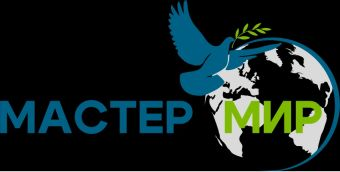

MITEX 2026 · Россия · Стенд 8А1103
МАСТЕР-МИР
Карточка проверена 10 ноября 2026, 09:25 · Источник ↗ · Снимок оригинальной карточки ↗
О компании
Компания Мастер-Мир – российский производитель и поставщик отделочного строительного инструмента и товаров для дома с 2002 года. Миссия компания заключается в разработке, производстве и экспертной дистрибуции передового инструмента и систем хранения высокого качества по доступной цене. Наши клиенты – ведущие DIY сети, крупнейшие ритейл операторы и маркетплейсы России, а также стран СНГ. Логистические комплексы, производственные площадки, разработка и менеджмент базируются в г. Санкт–Петербург и Ленинградской области.
Контакты
Все контактные сведения из карточки
Контакты Адрес: 194100, Россия, Санкт-Петербург, Санкт-Петербург, ул. Новолитовская, д.15А Веб-сайт: https://master-mir.ru/ E-mail: info@master-mir.ru Телефон: +78123802066
Все рубрики участника
Mitex - Рубрикатор
- 2. Садовая техника, инструмент, инвентарь, оборудование, расходные материалы и насосы
- 5. Слесарный, монтажный, столярный, ручной инструмент
- 6. Инструменты и оборудование для обработки и резки металла, проволоки, труб, камня, стекла, керамики, пластмасс, дерева
- 12. Крепеж, метизы, скобяные изделия
- 13. Приспособления для мастерских и складов, системы хранения, тара и упаковка
Зал
- Зал № 8
Участник выставки
- MITEX
- MITEX FASTENERS
Видео, каталоги и документы
В доступной карточке нет видео или документов. Смотрите сайт участника.